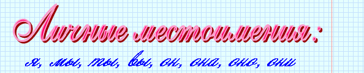

|
Местоимение – это самостоятельная часть речи, которая указывает на предметы, признаки, количество, но не называет их. |

 |
В косвенных падежах к личным местоимениям 3-го числа после предлога добавляется н. |
|
Предложение – это наименьшая единица речевого общения. |
 |
Золотая рожь колышется на ветру. (подлежащее рожь и сказуемое колышется составляют грамматическую основу этого предложения). Заря. (грамматическая основа состоит из одного подлежащего). Светает. (грамматическая основа состоит из одного сказуемого). |

|
Повествовательные предложения содержат сообщение о каком-либо факте, событии, явлении. В конце таких предложений ставится точка или восклицательный знак. |
|
Вопросительные предложения выражают вопрос. В конце вопросительных предложений ставится вопросительный знак, иногда – вопросительный и восклицательный. |
|
Побудительные предложения содержат побуждение к действию (просьбу, приказ, совет, пожелание). В конце таких предложений ставится точка или восклицательный знак. |